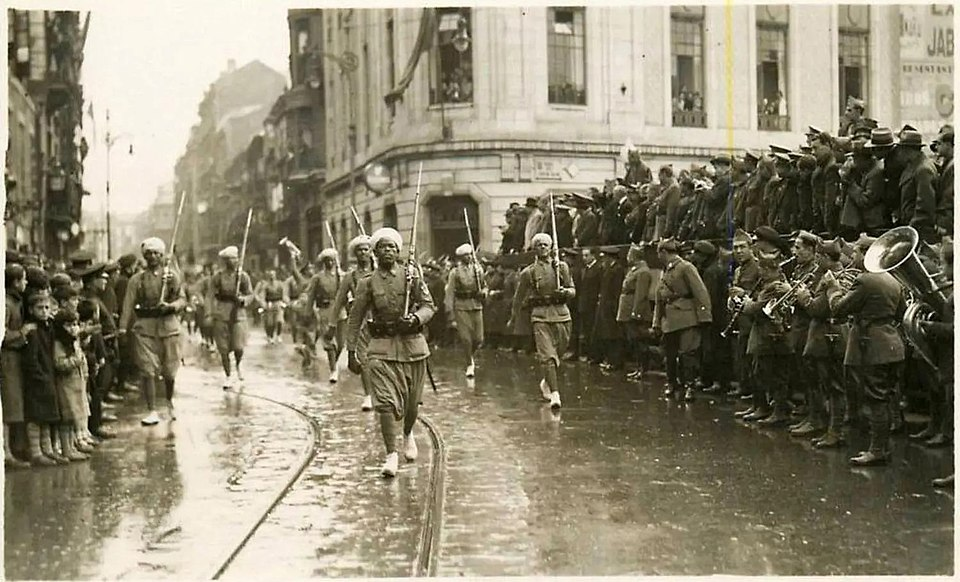

Actualidad · De las barricadas a las urnas · Asturias
Mieres votó en masa dieciséis meses después de la revolución: el 86 % fue a las urnas y el 79 % eligió al Frente Popular
En octubre de 1934, los mineros asturianos se levantaron en armas y fueron vencidos en quince días. En febrero de 1936 volvieron a las urnas con miles de presos todavía en la cárcel. Las cuencas, que ya votaban a la izquierda, se movieron poco; lo que cambió Asturias fue Gijón, que dejó de abstenerse.
Por Nacho G. del Álamo ·

Cada párrafo lleva una etiqueta: dato (cifra comprobable con las fuentes), patrón (relación que se repite, sin afirmar la causa), hipótesis (explicación posible, sin dos fuentes independientes) o contexto (hechos y declaraciones publicados por otros, enlazados). Cómo verificamos
ContextoUnos hombres caminan por una calle con raíles de tranvía. Van despeinados, sin corbata, con las chaquetas sucias; uno lleva en la mano un bulto blanco. A su lado camina un guardia civil con tricornio y el fusil al hombro, y detrás, una fila de guardias de uniforme los mira pasar. La foto se publicó en la prensa ilustrada polaca y la guarda hoy el Archivo Nacional Digital de Polonia, que la describe como «obreros detenidos por la Guardia Civil y la Guardia de Asalto durante la revolución de Asturias» (Wikimedia Commons, traducción propia). No dice dónde ni cómo se llamaban.

ContextoCuando el comité revolucionario decidió rendirse, su presidente, el socialista Belarmino Tomás, hizo un llamamiento a los obreros y a los mineros para que dejaran las armas. Sus palabras las recogió el historiador Hugh Thomas, y las reproduce la Wikipedia:
«Nuestra rendición de hoy no será más que un alto un alto en el camino, que nos servirá para corregir nuestros errores y para prepararnos para la próxima batalla».
Belarmino Tomás, presidente del Comité Revolucionario Provincial, octubre de 1934 (la repetición está en el texto citado).
DatoLa siguiente batalla fue una elección. El 16 de febrero de 1936, en Mieres, el concejo donde los insurrectos habían proclamado la República Socialista, votó el 86% de los 26.065 electores. El Frente Popular sacó el 78,5% de los votos a candidatos, según el Atlas Electoral de la Segunda República de la Universitat Pompeu Fabra. En toda Asturias votó el 74%.
Quince días de octubre
ContextoLa huelga general revolucionaria del 5 de octubre de 1934 se convocó en toda España contra la entrada de la CEDA en el Gobierno de Alejandro Lerroux. Fracasó casi en todas partes menos en Asturias. Allí, socialistas, comunistas y anarquistas se habían unido en la Alianza Obrera, y los mineros tomaron las cuencas en pocas horas. En Mieres se proclamó la República Socialista; en La Felguera, el comunismo libertario. Llegaron a reunir unos 30.000 hombres armados, según las cifras de Thomas que recoge la Wikipedia.
ContextoEl Gobierno mandó a la Legión y a los Regulares desde África. Francisco Franco dirigía las operaciones desde Madrid. Oviedo quedó arrasado en parte, con la Universidad y el teatro Campoamor quemados y la Cámara Santa de la catedral dinamitada. El 18 de octubre se rindió el último reducto.

ContextoLas cifras de víctimas siguen discutidas. El historiador Julián Casanova cuenta unos 1.100 muertos entre quienes apoyaron la insurrección y unos 300 entre las fuerzas de seguridad y el ejército; 34 sacerdotes y religiosos fueron asesinados. «En toda España fueron encarceladas entre 30 000 y 40 000 personas», resume la misma enciclopedia. Hubo torturas, que denunció una comisión de diputados, y dos condenas a muerte ejecutadas. Los ayuntamientos de izquierda fueron disueltos y los periódicos obreros, cerrados.
ContextoEl historiador David Ruiz recordó que la represión y la huida al monte ya las habían sufrido los obreros asturianos en 1906 y en 1917, y escribió: «Octubre de 1934 la convertirá en parte integrante de sus tradiciones». El dibujante Alfonso Zapico, hijo de mineros, que ha contado aquellos días en el cómic La balada del norte, explicó en El Salto por qué se unió la izquierda asturiana: «Quizás esa unión tuvo que ver con el miedo a que se impusiera la CEDA y el movimiento obrero quedara fulminado, como estaba ocurriendo en muchos países de Europa».
Antes: noviembre de 1933
DatoUn año antes de la revolución, en las generales del 19 de noviembre de 1933, la izquierda asturiana fue dividida. El PSOE sacó el 29,5% de los votos a candidatos; los comunistas, el 4,8%, y los republicanos de izquierda, el 4,8%. Juntos, el 39,1%. Las derechas sumaron el 46,5% y el centro, el 14,4%. La participación en la circunscripción fue del 68%.
DatoLas cuencas ya eran de izquierdas. En Mieres, la izquierda sumó el 73,4%; en Langreo, el 69,2%; en San Martín del Rey Aurelio, el 79,1%, y en Laviana, el 72,1%. La excepción era Gijón, la ciudad más grande, donde la izquierda se quedó en el 33,3% y las derechas ganaron con el 51,1%. Gijón era la ciudad de la CNT, y en 1933 la CNT había pedido no votar (lo contamos en la abstención anarquista de 1933).
Después: febrero de 1936
DatoEn febrero de 1936, toda la izquierda fue junta en el Frente Popular y sacó en Asturias el 51,7%, frente al 48,2% de las derechas. El centro desapareció. La participación en la circunscripción subió al 74%.
DatoEn las cuencas, el voto se movió menos que en el resto. Los seis concejos mineros (Mieres, Langreo, San Martín del Rey Aurelio, Laviana, Aller y Lena) dieron a la izquierda el 65,2% en 1933 y al Frente Popular el 70,6% en 1936, 5 puntos más; en toda Asturias, la subida fue de 13. En San Martín del Rey Aurelio bajó incluso, del 79,1% al 75,6%. Lo que sí fue extraordinario fue la participación: en los seis concejos votó el 83%, 9 puntos más que en el conjunto de Asturias. En Langreo, el 85,7%.
DatoEl vuelco estuvo en Gijón. El Frente Popular sacó allí el 63,9%, 31 puntos más que toda la izquierda en 1933, y votó el 81%. También subió mucho donde el centro de 1933 se hundió: en Cangas de Onís, del 18,4% al 49,6%; en Ribadesella, del 26,5% al 59,2%, y en Villaviciosa, del 8,2% al 33,7%. De los 73 concejos con datos en las dos elecciones, el voto de izquierdas subió en 61.
PatrónEl voto de las cuencas en 1936 se parece al de 1933 y no al de un lugar que acaba de vivir una revolución vencida. Lo que cambió en Asturias fue la suma: la izquierda unida, la CNT de Gijón votando y el centro hundido. Los datos no dicen cuánto pesó la represión en ese cambio, ni si la participación de las cuencas se debió a ella; dicen solo dónde se movieron los votos.
La amnistía
ContextoLa amnistía para los presos de octubre fue lo primero que hizo el nuevo Gobierno de Manuel Azaña. Llegó cinco días después de la votación. El decreto-ley del 21 de febrero de 1936, publicado al día siguiente en la Gaceta de Madrid y firmado por Niceto Alcalá-Zamora, empieza así:
«Siendo inequívoca la significación del resultado de las elecciones a Diputados a Cortes en cuanto a la concesión de una amnistía por delitos políticos y sociales, en favor de la cual se ha pronunciado la mayoría del Cuerpo electoral…».
Decreto-ley de amnistía, Gaceta de Madrid, 22 de febrero de 1936.
ContextoSu artículo único dice: «Se concede amnistía a los penados y encausados por delitos políticos y sociales». Uno de los que salieron fue Ramón González Peña, antiguo alcalde de Mieres, condenado a muerte por la revolución y conmutado. Tras la victoria del Frente Popular «es liberado y elegido nuevamente diputado», según la Wikipedia.
Lo que votan hoy las cuencas
DatoEn julio de 2023, los seis concejos mineros dieron a la izquierda el 62,2%, 13 puntos más que Asturias, donde la izquierda sacó el 49,3% y la derecha, el 48,1%. San Martín del Rey Aurelio, con el 65,2%, y Mieres, con el 64,1%, fueron los de voto más a la izquierda. Gijón dio a la izquierda el 50,6% y Oviedo, el 42,2%.
PatrónLa participación se ha dado la vuelta. En 1936, las cuencas votaban más que nadie. En 2023, en los seis concejos votó el 68% del censo, por debajo del 71% de Asturias. El voto sigue en el mismo lado; lo que ya no es igual es la movilización.
Lo que estos datos no dicen
ContextoEl Atlas da los votos por municipio, no por persona: no sabemos si votaron los mismos en 1933 y en 1936, ni cuántos de los presos de octubre estaban en el censo. En 1933 la izquierda fue por separado y la sumamos nosotros; en 1936 fue junta. En 1933 y 1936 se votaba con listas abiertas y varios votos por elector, y el peso de cada bloque es su parte de los votos a candidatos. La participación de 1933 solo la tenemos por circunscripción. El censo era de mayores de 23 años; el de 2023, de mayores de 18, sin voto exterior. Las cifras de muertos y de presos son estimaciones de historiadores y varían según la fuente.
ContextoEn la foto de 1934, los detenidos no tienen nombre. Dieciséis meses después, en Mieres, 22.330 personas fueron a votar.
Mira 1933 y 1936 en tu municipio, en el mapa · Más: La abstención anarquista de 1933 · Los pueblos fieles desde 1936
Método y fuentes
- Qué se compara
- Los concejos de Asturias en las generales del 19 de noviembre de 1933, del 16 de febrero de 1936 y del 23 de julio de 2023; los seis concejos mineros (Mieres, Langreo, San Martín del Rey Aurelio, Laviana, Aller y Lena) frente al resto.
- Límites
- En 1933 la izquierda fue por separado y la sumamos nosotros. La participación de 1933 solo se conoce por circunscripción. Las cifras de muertos y presos de 1934 son estimaciones de historiadores. En 1933 y 1936 se votaba con listas abiertas y varios votos por elector: el peso de cada candidatura es su parte de los votos a candidatos. El censo de entonces era de mayores de 23 años; el de 2023, de 18, sin voto exterior.
- Cómo se calcula
- Porcentaje de cada bloque sobre los votos a candidatos; medias ponderadas por el censo. En 2023, izquierda: PSOE y Sumar; derecha: PP y Vox. Cifras reproducibles con los scripts del expediente de la pieza. Metodología de Actualidad · Metodología del Atlas
- Fuentes
- Toni Rodon, Pau Vall-Prat y Diego Martín Álvarez, Electoral Atlas of the Spanish Second Republic (1931-1936), Universitat Pompeu Fabra, CORA Repositori de Dades de Recerca (CC BY-NC-SA 4.0)
- Ministerio del Interior, resultados electorales por mesa (Infoelectoral), vía pollspaindata. Sin voto exterior (CERA)
- Wikipedia, «Revolución de Asturias de 1934» (consultada el 23-10-2026)
- Wikipedia, «Ramón González Peña» (consultada el 23-10-2026)
- Gaceta de Madrid, decreto-ley de amnistía de 21 de febrero de 1936 (22-2-1936)
- Entrevista a Alfonso Zapico, El Salto
- Autoría
- Nacho G. del Álamo
- Revisión de datos y texto
- Nacho G. del Álamo, 23 de octubre de 2026
- Publicado · actualizado
- 23 de octubre de 2026 · 23 de octubre de 2026
- Correcciones
- Ninguna.
Serie «Historia electoral»: 29 piezas
- Pozuelo, Getxo o Ávila: 1.932 municipios donde el PSOE nunca ha ganado unas generales
- Siete partidos distintos han ganado en Mont-roig del Camp: ha cambiado 11 veces de ganador en 16 generales
- En Baltar votó el 16 % en 1979; hoy vota el 79 %. La participación imposible del interior gallego
- En Arona votó uno de cada cinco electores en las europeas de 2014
- Tres partidos en 1,3 puntos: el empate a tres de Euskadi en 2023 no tiene precedentes
- El voto en blanco se multiplicó por seis entre 1977 y 2000, y desde entonces se ha reducido a la mitad
- Antes de Teruel Existe: los cinco diputados andalucistas de 1979 y el 19,7 % de Cádiz
- De 23,6 a 35,1 millones: el censo electoral ha crecido un 49 % desde 1977
- Las europeas solo superan el 60 % de participación cuando coinciden con las municipales
- El mapa de 1936 apenas se parece al de hoy: 1.545 pueblos que votaron a las derechas eligen ahora a la izquierda
- Fuente Vaqueros, el pueblo de Lorca, dio el 77,5 % al Frente Popular; Víznar, donde lo mataron, el 63 % a las derechas
- Gernika votó al PNV en 1936 y volvió a hacerlo en 2023, por 11 votos; Belchite tiene hoy menos electores que antes de su batalla
- Las mujeres votaron por primera vez en 1933 y ganaron las derechas; en 1936 volvieron a votar y 888 pueblos se pasaron al Frente Popular
- 256 pueblos han votado a la izquierda en 1936 y en las 16 generales de la democracia; 1.610, siempre a la derecha
- Cuando la CNT pidió no votar, en Alcalá de Gurrea votaron 87 de 829 electores; dos años después, 517
- Riaño dio el 86 % a las derechas en 1936; Mequinenza, el 89 % al Frente Popular. Así votaban los pueblos que se tragaron los pantanos
- Vallecas dio el 86 % al Frente Popular y Franco la borró del mapa: los 1.334 pueblos que votaron en 1936 y ya no existen
- Estás aquíMieres votó en masa dieciséis meses después de la revolución: el 86 % fue a las urnas y el 79 % eligió al Frente Popular
- Vic dio el 69 % a la Lliga en 1933 y hoy es la gran ciudad de Junts; L'Hospitalet dio el 77 % al Front d'Esquerres de Companys y hoy vota al PSC
- Los pueblos que levantó Franco votan más a Vox que sus vecinos: en Tiétar, Rosalejo y Pueblonuevo de Miramontes pasó del 25 %
- Ver las 29 piezas de la serie
Más datos: más piezas sobre historia electoral.
Sigue leyendo
- A cuatro días del 3 de noviembreTrump mandó redibujar el mapa para conservar la Cámara; las encuestas no le acompañan
- Israel, las cuentas del 61Con todo el voto contado, Netanyahu solo llega a 61 escaños si suma a Ra'am, el partido islamista árabe
- Las llaves y la urnaDonde viven los caseros gana el PP; donde viven los inquilinos, gana la abstención
- ActualidadTodas las piezas de actualidad
- AtlasAtlas de las anomalías electorales